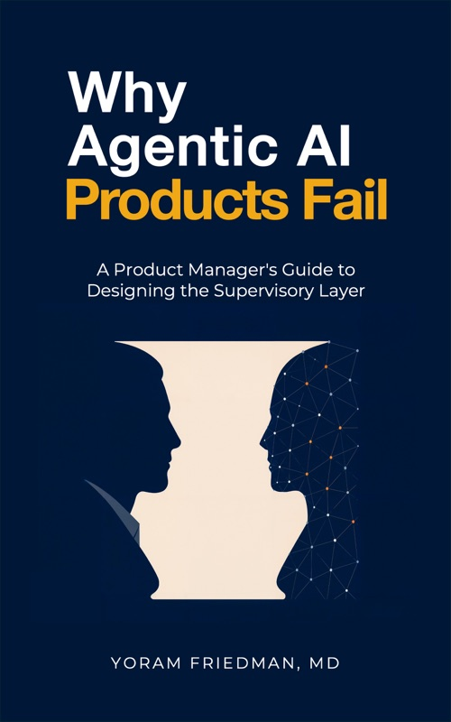

Five books / One connected discipline
Free to read online
Agentic AI.
The series.
Products that act.
People who decide.
Field guides to designing, building, and governing agentic AI products—and keeping the human judgment they depend on.

02 / The failuresBook 2

03 / The teamBook 3

04 / The practitionerDraft · Book 4

05 / The leadersPublished
Each book stands alone. Together, they describe the whole system.
Find your starting point ↓These books were written from a practitioner’s seat, not an analyst’s. Each one is a field guide to a specific problem: what the PM job actually requires, what the team has to hold, and what happens when the agent runs without a design behind it.
They were written in order, but each stands alone. If you are new to agentic product management, start with Book 1. If you are building something specific, start where the problem is. If you have been operating agents long enough to feel the supervision skill quietly erode, start with Book 4.
New to the field?
Start here.
The product management job has changed.
Start with Agentic AI for Busy Product Managers. Follow the full lifecycle from the decision to build through design, evaluation, and operation. Second edition.
The catalogue.
Start where the problem is / 01—05
01
The product manager
Agentic AI for Busy Product Managers
A Practitioner’s Guide to the New PM Job
What changes when the product can act?
The full PM lifecycle for agentic products: deciding whether to build, designing behavior and evals, measuring drift, and managing the human system around the agent. Fifteen chapters. Second edition.
15 chapters · Second edition
02
The supervisory layer
Why Agentic AI Products Fail
A Product Manager’s Guide to Designing the Supervisory Layer
Who supervises the system?
Every agentic product is two products. Most teams build the first and assume the second takes care of itself. It does not. Twenty-two chapters on the supervisory layer’s four dimensions, failure modes, and how to build it deliberately.
22 chapters
03
The team
Who owns what when software acts?
The prior books were written from the PM’s seat. This one zooms out. The unit of failure is the seam between roles, not the capability of any one of them. Twenty-six chapters.
26 chapters
04
The practitioner
How do you keep your own judgment?
The first three books rest on one assumption nobody audited: that the practitioner in the seat still has the judgment the structure routes through them. This book is the deliberate-practice curriculum that keeps that assumption true. Fifteen chapters and a full appendix set.
Draft · 15 chapters · Full appendix set
05
Product leadership
How do you lead from proposal to operation?
The other four are built out of documented incidents and cited research. This one is built the other way, around a single company that does not exist, followed from the sentence that proposed an agent to the year after it launched. Ten chapters of argument, five phases of case, thirty procedure cards and eleven case-file exhibits.
Published · 10 chapters · 5 case phases
Beyond the books
Bring the ideas
into the room.
01 / Whitepapers
Eight papers.
One question each.
Read & download the papersCost, readiness, supervision, prototyping, procurement, and the roles that arrive with the agent. Eight to fifteen pages each, written to hand to a room that has not read the books. Free to read and download.
02 / Interview reference
AI PM interview
questions, answered.
Explore the answersThe questions circulating in 2026, answered against the lifecycle and linked to the chapter each answer comes from. Plus the eleven questions nobody asks, including who owns a wrong outcome.
03 / Claude Cowork skills
The lifecycle,
ready to use.
Install the skill packageEight skills covering the agentic PM lifecycle, distilled from the four books. Install in Claude Cowork and invoke at the moment of need. Stage 1 of three.